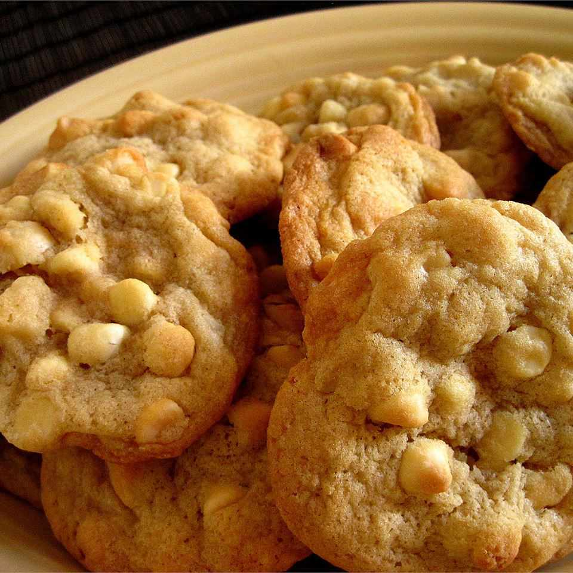

White Chocolate Macadamia Nut Cookies

Beautiful light brown cookies with white chocolate and nuts
Satisfy your sweet tooth with these white chocolate macadamia nut cookies.
Easy to bake, easy to serve!
Ingredients:
- 1 cup butter, softened
- 3/4 cup packed light brown sugar
- 1/2 cup white sugar
- 2 large eggs
- 1/2 teaspoon vanilla extract
- 1/2 teaspoon almond extract
- 2 1/2 cups all-purpose flour
- 1 teaspoon baking soda
- 1/2 teaspoon salt
- 1 cup chopped macadamia nuts
- 1 cup chopped white chocolate
Steps:
- Preheat the oven to 350 degrees F (175 degrees C).
- Beat butter, brown sugar, and white sugar together in a large bowl with an electric mixer until light and fluffy.
Beat in eggs one at a time, then stir in vanilla and almond extracts.
- Combine flour, baking soda, and salt in another bowl. Gradually stir flour mixture into butter mixture; fold in macadamia nuts and white chocolate.
- Drop spoonfuls of dough 2 inches apart onto ungreased cookie sheets.
- Bake in the preheated oven until golden brown, about 10 minutes.